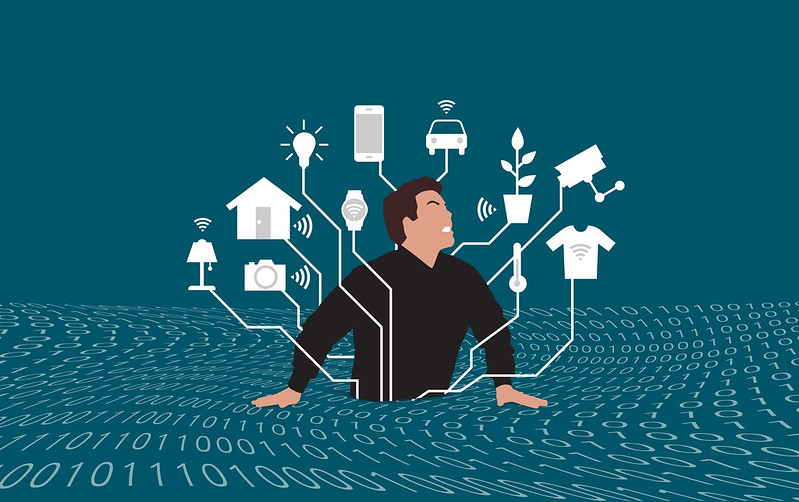

1. How technology Affects our daily life?
As we all know that,
This is the era of digitalization where around 4.6 billion people use technology in their daily lives. This means a huge number of users are suffering
from technology, Due to lots of advantages rather than disadvantages more people are attracted to these things.
Harsh truth in 21st century,
Many sectors like hospitals, bank,drug manufacturers, the insurance company. It sector one of the booming sectors from the 90s is completely
dependent upon technologies.
Although we are here to talk about how technologies affect our daily lives. So without wasting our time let’s began:
5 Affects that are caused by Technology:

1. Depression and anxiety
After lots of research and study, It is concluded that technology can be the cause of depression and anxiety. We know all social media and other platforms are also a technology which is really popular in the world. Due to the huge use of this technology and many more people can suffer from
depression and anxiety.
2. Sleep problem
Heavy uses of technologies can lead you to insomnia diseases and many other sleep problems. Nowadays people are using their devices like mobile,
pc, tablet, etc. before bedtime which causes issues with sleep. The reason behind the sleeping problem is blue rays which come out from mobile, pc, etc.
3. Eyestrain
Due to maximum consumption of blue rays and more other elements. It can seriously damage our eyes. All over the world, many people are facing this
problem and it is increasing day by rapidly which can cause to invisible also, So it’s taking safety measures and use our technologies or devices.
4. Lack of attention
Actually, Technology affects the way individuals communicate, learn, and think. Technology has really impacted our brains. This causes lots of attention
lack from day-day activities. This seriously pulls us into laziness and creates a barrier in our work life.
5. Increase health issue
Although, It doesn’t have any direct connection to health it doesn’t mean that, it is completely ignoring your health. No, In the long run, it seriously impacts your health by creating different diseases and addictions.
Despite negative effects their a lot more positive effects of technology in our daily lives. In today's world, it has played a vital role in our day-to-day life. Similar to Study it has made learning more interactive and collaborative, this helps people better engage with the material that they are learning and have trouble with.